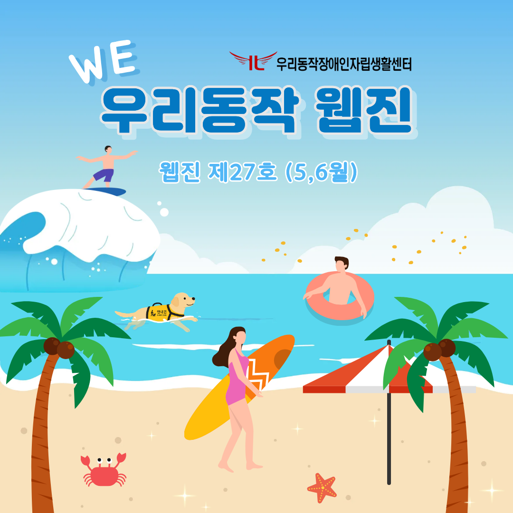
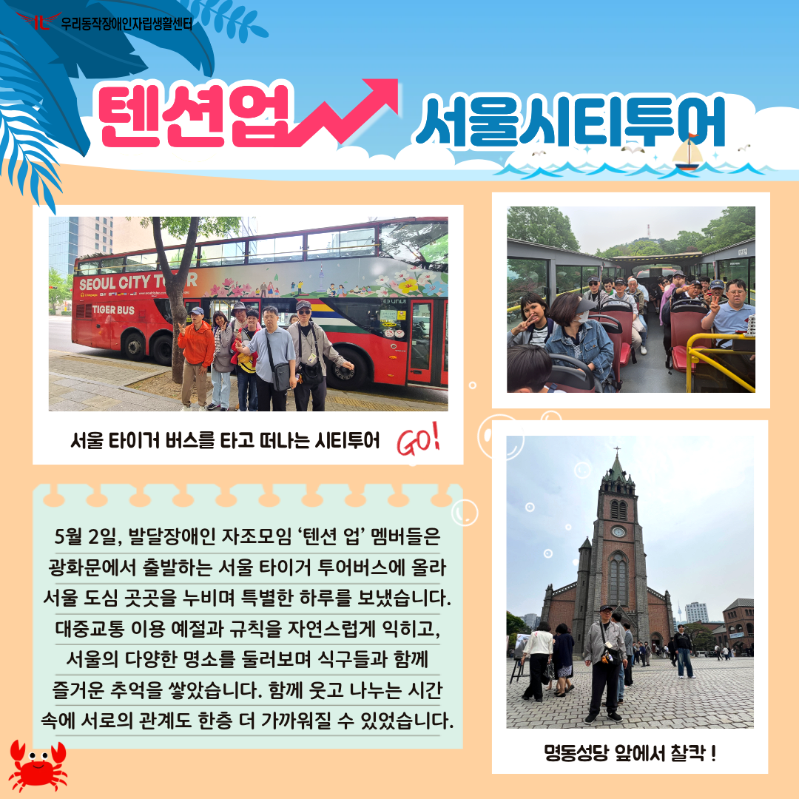
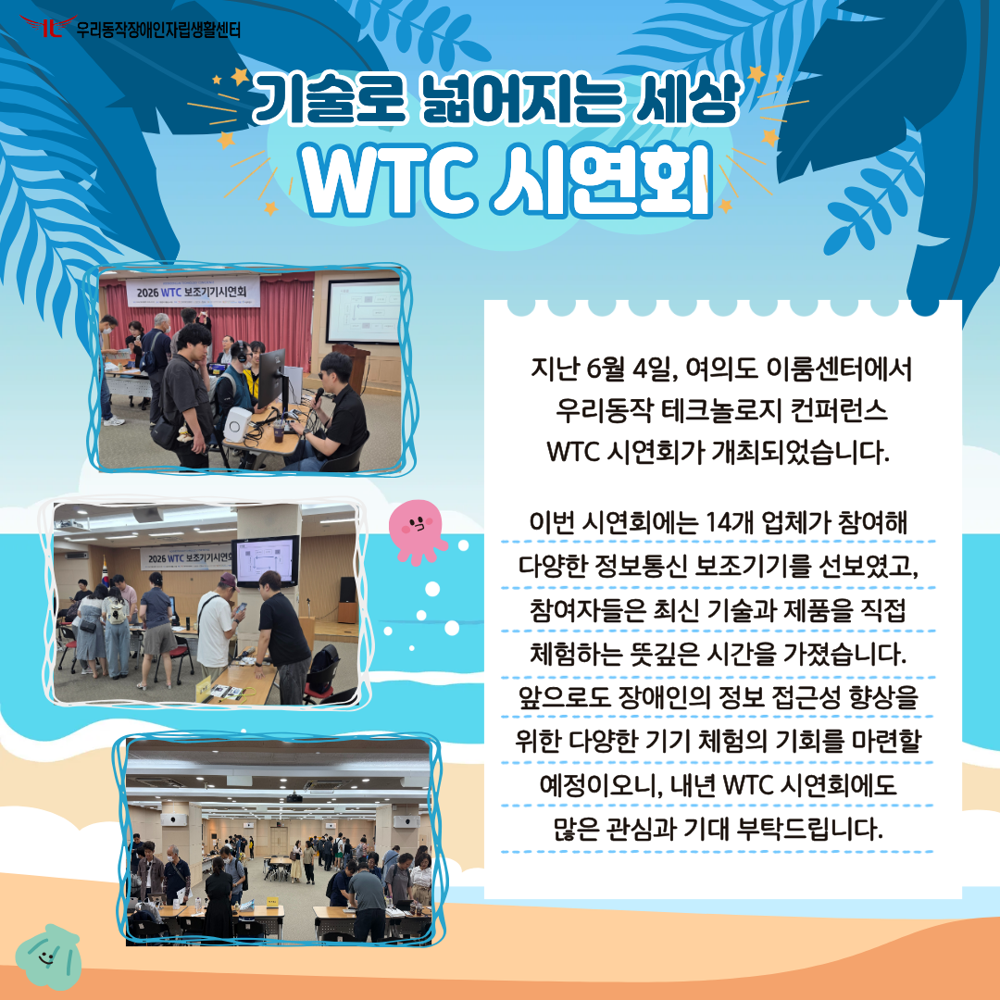
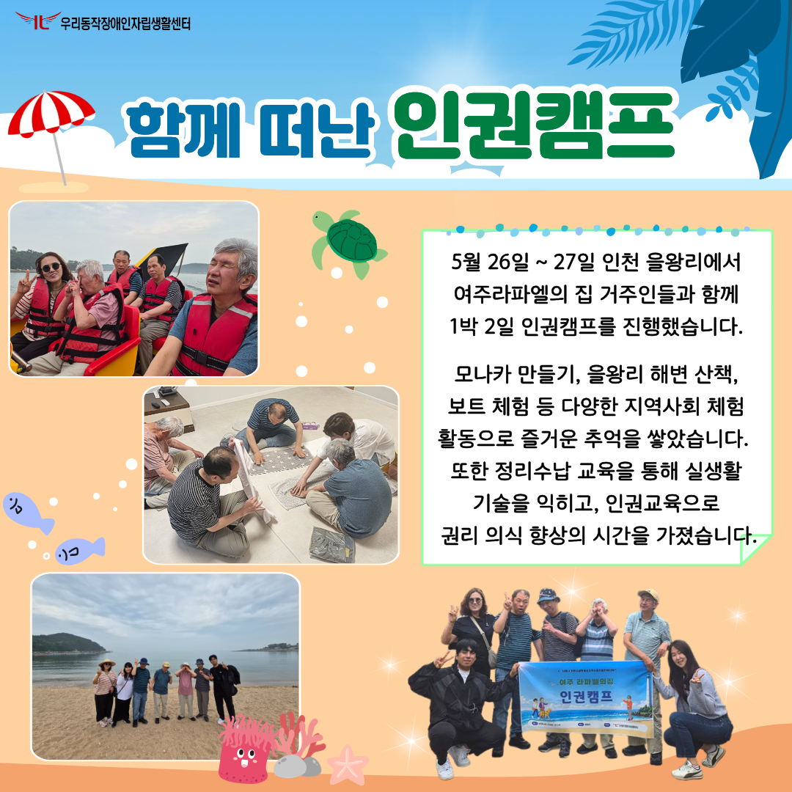
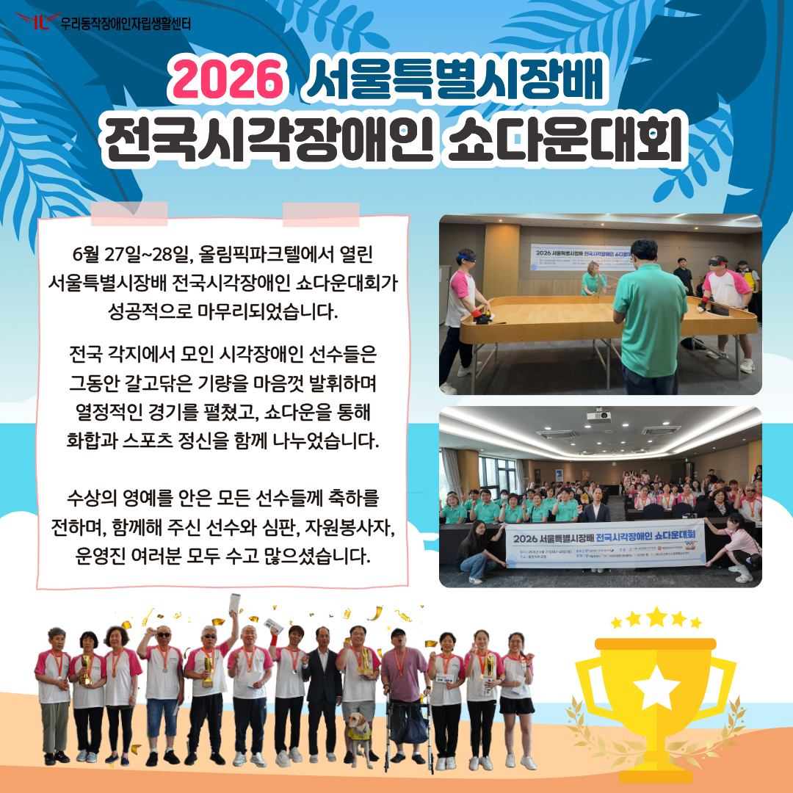
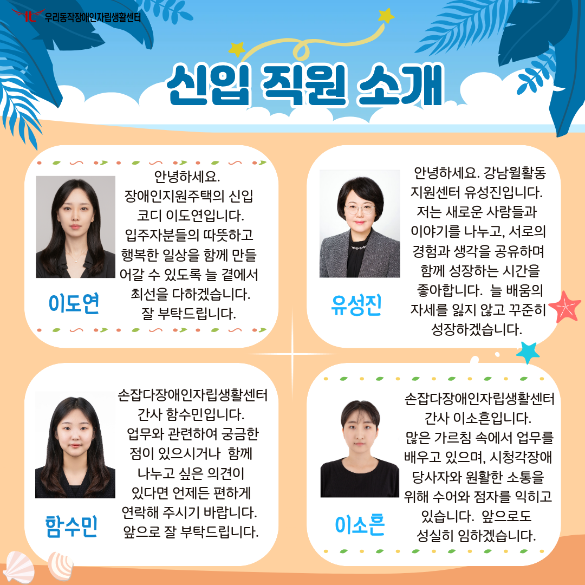
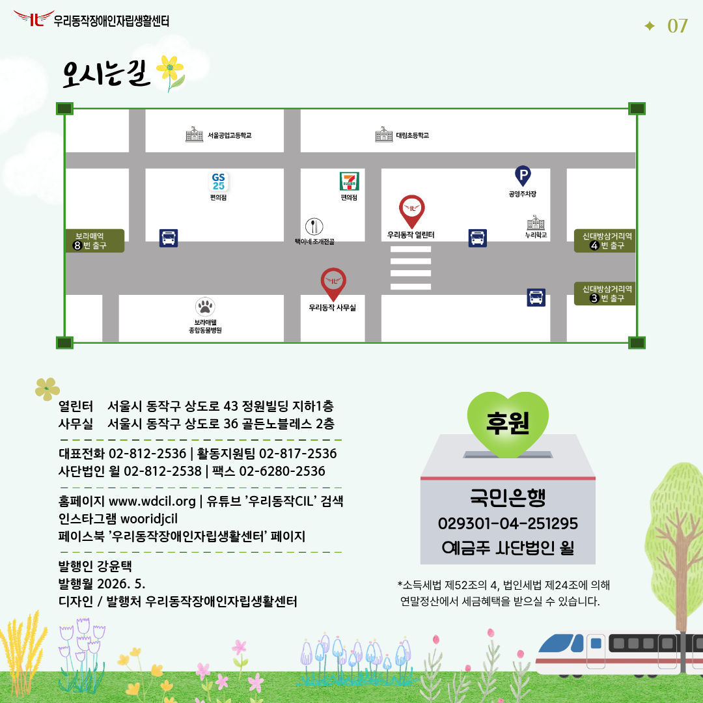

우리동작 제27호 웹진 (5,6월)
제27호 우리동작 웹진

안녕하세요. 제27호 우리동작 웹진을 발간하였습니다. 표지 설명: 한 남성이 파도를 가르며 서핑을 즐기고, 튜브를 낀 남성과 안내견이 함께 물놀이를 하고 있다. 야자수 나무 아래 햇살을 받아 반짝이는 모래사장 위로는 서핑보드를 든 한 여인이 여유롭게 해변을 걷고 있다.
텐션업 서울시티투어

5월 2일, 발달장애인 자조모임 ‘텐션 업’ 멤버들은 광화문에서 출발하는 서울 타이거 투어버스에 올라 서울 도심 곳곳을 누비며 특별한 하루를 보냈습니다. 대중교통 이용 예절과 규칙을 자연스럽게 익히고, 서울의 다양한 명소를 둘러보며 식구들과 함께 즐거운 추억을 쌓았습니다. 함께 웃고 나누는 시간 속에 서로의 관계도 한층 더 가까워질 수 있었습니다. 사진 설명: 서울 타이거 버스를 타고 떠나는 시티투어를 앞두고 촬영한 기념사진, 버스 안에서 브이 포즈를 취하며 즐거운 시간을 보내는 참여자들, 명동성당 앞에서 기념사진을 촬영하는 참여자의 모습.
'WTC 시연회'

이번 시연회에는 14개 업체가 참여해 다양한 정보통신 보조기기를 선보였고, 참여자들은 최신 기술과 제품을 직접 체험하는 뜻깊은 시간을 가졌습니다. 앞으로도 장애인의 정보 접근성 향상을 위한 다양한 기기 체험의 기회를 마련할 예정이오니, 내년 WTC 시연회에도 많은 관심과 기대 부탁드립니다. 사진 설명: 다양한 보조기기를 직접 체험하며 기능을 살펴보고 즐겁게 참여하는 참여자들의 모습.
함께 떠난 인권캠프

5월 26일 ~ 27일 인천 을왕리에서 여주라파엘의 집 거주인들과 함께 1박 2일 인권캠프를 진행했습니다. 모나카 만들기, 을왕리 해변 산책, 보트 체험 등 다양한 지역사회 체험 활동으로 즐거운 추억을 쌓았습니다. 또한 정리수납 교육을 통해 실생활 기술을 익히고, 인권교육으로 권리 의식 향상의 시간을 가졌습니다. 사진 설명: 보트를 타고 스릴 넘치는 체험을 즐기는 참여자들의 모습, 수건을 직접 접으며 진행중인 정리수납 교육, 인천 을왕리 앞바다를 배경으로한 단체 기념사진, 인권캠프 현수막을 들고 함께 브이 포즈를 취하며 환하게 웃는 참여자들의 모습.
2026 서울특별시장배 전국시각장애인 쇼다운대회

6월 27일~28일, 올림픽파크텔에서 열린 서울특별시장배 전국시각장애인 쇼다운대회가 성공적으로 마무리되었습니다. 전국 각지에서 모인 시각장애인 선수들은 그동안 갈고닦은 기량을 마음껏 발휘하며 열정적인 경기를 펼쳤고, 쇼다운을 통해 화합과 스포츠 정신을 함께 나누었습니다. 수상의 영예를 안은 모든 선수들께 축하를 전하며, 함께해 주신 선수와 심판, 자원봉사자, 운영진 여러분 모두 수고 많으셨습니다. *사진 설명: 결승전 팽팽한 긴장감 속에 경기에 집중하는 선수들과 심판. 대회 단체 기념사진. 메달과 트로피를 들어 올리며 수상의 기쁨을 만끽하는 선수들의 환호 가득한 모습.
신입 직원 소개

이도연 안녕하세요. 장애인지원주택의 신입 코디 이도연입니다. 입주자분들의 따뜻하고 행복한 일상을 함께 만들어갈 수 있도록 늘 곁에서 최선을 다하겠습니다. 잘 부탁드립니다. 유성진 안녕하세요. 강남윌활동지원센터 유성진입니다. 저는 새로운 사람들과 이야기를 나누고, 서로의 경험과 생각을 공유하며 함께 성장하는 시간을 좋아합니다. 늘 배움의 자세를 잃지 않고 꾸준히 성장하겠습니다. 함수민 손잡다장애인자립생활센터 간사 함수민입니다. 업무와 관련하여 궁금한 점이 있으시거나 함께 나누고 싶은 의견이 있다면 언제든 편하게 연락해 주시기 바랍니다. 앞으로 잘 부탁드립니다. 이소흔 손잡다장애인자립생활센터 간사 이소흔입니다. 많은 가르침 속에서 업무를 배우고 있으며, 시청각장애 당사자와 원활한 소통을 위해 수어와 점자를 익히고 있습니다. 앞으로도 성실히 임하겠습니다.
제27호 우리동작 웹진 안내

만족도 조사오른쪽 상단의 만족도 조사 버튼을 통해 의견을 남겨주시면, 우리동작 웹진의 발전과 개선에 큰 도움이 됩니다. 후원 국민은행 029301-04-251295 예금주 사단법인 윌 소득세법 제52조의 4, 법인세법 제24조에 의해 연말정산에서 세금혜택을 받으실 수 있습니다. 열린터 서울시 동작구 상도로 43 정원빌딩 지하 1층 사무실 서울시 동작구 상도로 36 골든노블레스 2층 대표전화 02-812-2536 활동지원팀 02-817-2536 사단법인 윌 02-812-2538 팩스 02-6280-2536 홈페이지 www.wdcil.org 유튜브 우리동작CIL 검색 인스타그램 wooridjcil 페이스북 우리동작장애인자립생활센터 페이지 발행인 강윤택 발행월 2026년 7월 디자인 및 발행처 우리동작장애인자립생활센터